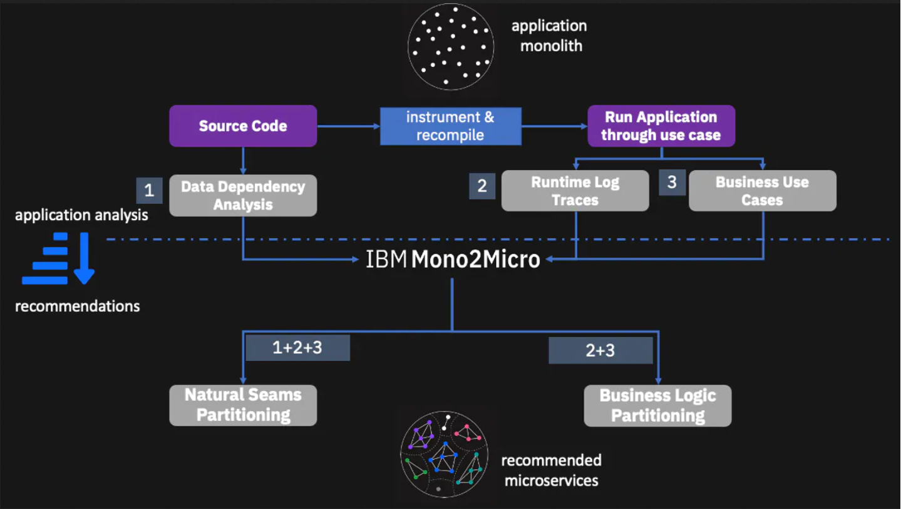

はじめに¶
ビジネス・アプリケーションを近代化するための最良の方法の1つは、マイクロサービスにリファクタリングすることです。各マイクロサービスは、独立して機能強化と拡張が可能であり、敏捷性と提供速度の向上を実現します。また、マイクロサービスは、レガシーアプリケーションをクラウドに移行するための自然な方法でもあります。
Mono2Microは、新しい機械学習アルゴリズムと世界初のコード生成技術を用いたAIベースの半自動ツールセットで、Javaアプリケーションのコードやビジネスロジックを書き換えることなく、完全または部分的なマイクロサービスへのリファクタリングの旅を支援します。Mono2は、モノリシックなアプリケーションを静的および動的に分析し、モノリシックなアプリケーションを潜在的なマイクロサービスとなるクラス群に分割する方法を提案します。パーティション化に基づいて、Mono2Microはマイクロサービスの基礎コードとAPIを生成し、既存のモノリシックなJavaクラスと一緒に、実行中のマイクロサービスを実装してデプロイするために使用できるようにします。

次の図は、Mono2Microを使って、既存のモノリシック・アプリケーションのデータを収集し、AIアナライザ・ツールを実行して、アプリケーションを分割する異なる方法に関する2種類の推奨事項を生成するところまでを示したハイレベルなフロー図です。

すべてのデータを収集する方法については、「モノリシックアプリケーションのデータ収集」のセクションで詳しく説明しますが、基本的にデータは、コード分析から静的に収集され、インスツルメンテーションされたモノリシックアプリケーションをさまざまなユースケースシナリオで実行してコードベースをできるだけ多く活用することで動的に収集されます。
Mono2Microは、収集したデータに基づいて、パーティション間のクラスの包含依存性や絡み合い（言い換えれば、クラスがパーティション外のメソッドを呼び出すこと）が最小限になるようにモノリシッククラスをパーティション化してグループ化することを目的とした、Natural Seams Partitioning勧告を生成します。データ依存性分析」とは、このようなJavaクラス間の依存性分析のことです。事実上、これは一枚岩のアプリケーションを自然な継ぎ目に沿って、最小限の混乱で分割します。
Mono2Microは、ユースケース・データとランタイム・ログ・トレースに基づき、クラス・コンテインメントの依存性とメソッド・コールを考慮せずに、ビジネス・ロジック・パーティショニングも生成します。このパーティショニングは、パーティション間のより多くの絡み合いと依存性を提示するかもしれませんが、最終的には、モノリシック・アプリケーションを機能とビジネス・ロジックの能力に沿って分割する、より有用なパーティショニングを提供します。
このチュートリアルでは、DayTraderと呼ばれるオンライン株式取引システムをエミュレートしたオープンソースのモノリシックJava EEベンチマーク・アプリケーションを使用して、モノリシック・アプリケーションから始まり、同じアプリケーションのデプロイされコンテナ化されたマイクロサービス・バージョンに至るまで、Mono2Microツールセット全体を最後まで順を追って説明します。
前提条件¶
Mono2Microのページにアクセスして、以下のものをダウンロードすることをお勧めします。
- ユーザーガイド
- データコレクタツール
-
Mono2Micro-example.zipファイルには、このチュートリアルで説明するすべてのコードとファイルが含まれています（それぞれの詳細については、READMEに記載されています）。 -
Monolithのソースコード。モノリスのソースコード：
./daytrader/monolithです。 - Monolith アプリケーションデータ。モノリスのソースコード：
./daytrader/monolith* モノリスのアプリケーションデータ：./daytrader/application-data/ - Mono2Micro分析（AI分析ツールによる初期推奨）：
./daytrader/mono2micro-analysis/ - Mono2Micro分析(さらに手作業でカスタマイズ):
./daytrader/mono2micro-analysis-custom/. -
Mono2Microで生成されたコードをベースに、デプロイ可能なマイクロサービスのソースコードを作成します。
./daytrader/microservices/Note:
Mono2Micro-example.zipファイルのダウンロードに問題がある場合は、直接ダウンロードすることもできます。
このチュートリアルでは、お使いのマシンにMono2Microコンテナとツールがすでにインストールされていることを前提としています。このチュートリアルでは、Mono2Micro のコンテナとツールがインストールされていることを前提としていますが、各ツールの実行やファイルの編集・生成は任意です。生成されたすべてのファイルと、.zip ファイルに含まれるコードを確認しながら進めることができます。
モノリシック・アプリケーションのデータの収集¶
Mono2Micro を使用してリファクタリング プロセスを開始するための最初のステップは、静的および動的解析のためにモノリシック アプリケーションの Java ソース コードを準備することです（少なくとも、マイクロサービスにリファクタリングする予定のモノリシック アプリケーションの部分またはモジュールのソース コード）。DayTrader アプリの場合、EAR モジュール、EJB モジュール、Web モジュール、およびその他の補助ファイルで構成される、ソースファイルの完全なセットがすでに 1 つのディレクトリツリーに用意されています。この記事では、/m2m/の親ディレクトリにMono2Micro-example.zipが展開されていると仮定します。monolithのソースファイルのツリーは、/m2m/daytrader/monolith/ディレクトリにあります。
まず、静的なデータ収集の段階として、Mono2MicroのBluejayツールを実行して、Javaのソースコードを解析し、インスツルメントを行い、解析結果を2つのJSONファイルに出力してみましょう。解析を実行するには、以下のコマンドを実行します。
docker run -e LICENSE=accept --rm -it -v /m2m/daytrader:/var/application ibmcom/mono2micro-bluejay /var/application/monolith
その後、Bluejayが実行され、親ディレクトリに入力ソースディレクトリのミラーコピーを-kluという拡張子で作成します。例えば、/m2m/daytrader/monolith-klu/では、ディレクトリツリー全体の中にある全てのJavaファイルがインスツルメンテーションされ、各メソッドのエントリーとエグジットの時間がログに記録されます（これについては後ほど詳しく説明します）。ソースのインストルメント化に加えて、/m2m/daytrader/monolith-klu/では、2つのJSONファイル refTable.json と symTable.json が生成されます。これらのファイルには、メソッドのシグネチャ、クラスの変数や型、クラスの包含依存関係（あるクラスが別のクラスをインスタンス変数の型やメソッドの戻り値・引数の型として使用している場合）、クラスの継承、パッケージの依存関係、ソースファイルの位置など、各Javaクラスに関する様々な詳細やメタデータが記録されています。この静的解析により、モノリシックアプリケーションのJavaコードの詳細な概要が収集され、Mono2MicroのAIアナライザツールは、モノリシックアプリケーションをどのように分割するかについての推奨事項を提供することになります。さらに、この情報はMono2Microのコード生成ツールでも使用され、各パーティションをマイクロサービスとして実装するための基盤と配管のコードを生成します。
前述のように、Bluejayは、静的解析から2つのテーブル.jsonファイルを生成するとともに、ソースツリー全体のすべてのJavaファイルを計測し、各メソッドにロギングステートメントを注入して、メソッドが入力された時間と終了した時間を正確に記録します。さらに、スレッドIDも記録します。このスレッドIDは、後にMono2MicroのAI解析ツールがトレースデータの壊れた断片をつなぎ合わせるために使用します。このバージョンのソースコードを使用して、モノリシックアプリケーションのインスツルメンテッドバージョンを構築・実行し、アプリケーション全体で様々なユーザーシナリオを実行することで、可能な限り多くのコードを実行し、AI分析に備えて追加のデータを動的に収集することができます。m2m/daytrader/monolith-klu/`のソースを使用して、インスツルメンテッド・デイ・トレーダー・アプリを構築・実行するには、オリジナルのモノリシック・アプリケーションにすでに使用されているのと同じbuild processを使用することができます。
データ収集の次の段階に入る前に、モノリシックコードでのインスツルメンテーションの例を見てみましょう。/m2m/dayatrader/monolith-klu/daytrader-ee7-ejb/src/main/java/com/ibm/websphere/samples/daytrader/TradeAction.javaにあるTradeActionクラスを見てみると、エントリーとエグジットの時間を記録するステートメントがどのように注入されているかがよくわかります。
``java public OrderDataBean buy(String userID, String symbol, double quantity, int orderProcessingMode) throws Exception {。
try {
System.err.println("|v2.0.0r34|"+String.valueOf(System.currentTimeMillis())+",["+String.valueOf(Thread.currentThread().getId())+"],"+"Entering daytrader_src/daytrader-ee7-ejb/src/main/java/com/ibm/websphere/samples/daytrader/TradeAction.java::com.ibm.websphere.samples.daytrader.TradeAction::buy(String, String, double, int)|");
if (Log.doActionTrace()) {。
Log.trace("TradeAction:buy", userID, symbol, new Double(quantity), new Integer(orderProcessingMode));
}
OrderDataBean orderData = trade.buy(userID, symbol, quantity, orderProcessingMode);
// 株式の購入または売却の後、株式の数量と価格を更新します。
updateQuotePriceVolume(symbol, TradeConfig.getRandomPriceChangeFactor(), quantity);
return orderData;
}
最後に
System.err.println("|v2.0.0r34|"+String.valueOf(System.currentTimeMillis())+",["+String.valueOf(Thread.currentThread().getId())+"],"+"Exiting daytrader_src/daytrader-ee7-ejb/src/main/java/com/ibm/websphere/samples/daytrader/TradeAction.java::com.ibm.websphere.samples.daytrader.TradeAction::buy(String, String, double, int)|");
}
}
これで、モノリシック・アプリケーションからのデータ収集という次のフェーズに進む準備ができました。このフェーズは、収集したデータの量と質の両方が、Mono2Micro AIアナライザー・ツールが推奨するパーティショニングの質と有用性に影響を与える重要なフェーズです。ここでの重要なコンセプトは、実行中のインスツルメンテッド・モノリシック・アプリケーションで可能な限り多くのユーザー・シナリオを実行し、コードベースの可能な限り多くを実行することです。これらのユーザー・シナリオ（あるいはビジネス・ユース・ケース）は、アプリケーションが提供する様々な機能に関連する、アプリケーションを介した典型的なユーザー・スレッドでなければなりません。これは、機能検証テスト・ケースやより大きなグリーンスレッドに似ており、ユニット・テスト・ケースにはあまり似ていません。
DayTraderの場合、これらのシナリオのいくつかの例が含まれます。
- アプリケーションの構成とデータベースの設定
- ユーザーとしてアプリケーションにログインする
- ログイン後、マーケットサマリーを表示し、株式相場を見る
- 株の購入やその他の取引を行う
これらのユースケースはインスツルメンテッド・モノリシック・アプリケーション上で実行されるので、Mono2Microの**Flicker**ツールを使用して、ユースケースのラベルと、そのユースケースやシナリオが実行されたときの開始時間と停止時間を記録します。Flickerツールはユースケースを記録するためのストップウォッチのような役割を果たし、各ユースケースに対してFlickerに提供されるラベルは意味のあるものでなければなりません。これは後にMono2MicroのAI分析を見る際に、コード内のクラスやフローがユースケースのラベルに関連付けられていることからもわかります。FlickerはシンプルなJavaベースのツールで、ユーザーにユース・ラベルの入力を促し、開始時刻を記録し、ユーザーがモノリシック・アプリケーション上でそのシナリオの実行を終えた後に、「stop」コマンドの入力を再度促すようになっている。
以下のコマンドは、Flickerツールと実行中のモノリシック・アプリケーションの両方が同じマシン上にある場合に、Flickerツールを実行するための典型的なコマンドです（より複雑な設定については、Mono2Microユーザーガイドを参照してください）。
java -cp commons-net-3.6.jar;json-simple-1.1.jar;.フリッカー -no_ntp
次の図は、モノリシックアプリケーション上でユースケースの例（ユーザーとしてログインする）を実行し、Flickerツールを並行して実行したときのスクリーンショットです。

例えば、ユーザー・ログインのシナリオを実行すると、Flickerは開始時刻を記録し、シナリオに戻って "STOP "コマンドを入力してシナリオが終了したことを示した後、停止時刻を記録しました。
同様に、次の図は別のユースケースの例（ユーザーが自分の株式ポートフォリオを見る）をモノリシック・アプリケーション上で実行し、Flickerツールを並行して実行しているスクリーンショットです。

Flickerツールを終了すると、ユースケースのラベルとその開始/終了時刻をキャプチャしたコンテキスト.jsonファイルが生成されます。これらのコンテキスト.jsonファイルは、1つまたは複数作成することができます。これらは2つの簡単な例に過ぎません。インスツルメンテッドなモノリシックアプリケーションで実行したユースケースのより完全なリストは、`/m2m/daytrader/application-data/contexts/daytrader.json`にあります。
おさらいとして、以下のリストはモノリス型アプリケーションで収集されたデータの概要です。
* コードの静的解析から得られたJavaクラスとその関係に関する特定の情報を含む2つのテーブル.jsonファイル。
* ユースケースの名前/ラベルとその開始/終了時刻を含む1つ以上のコンテキスト.jsonファイル。
* インスツルメンテーションされたアプリケーションでユースケースが実行されているときに、アプリケーションサーバー側でキャプチャされたすべての標準コンソール出力/エラーログファイル。
これら3つのデータにより、Mono2Microは、各ユースケースの開始時刻と終了時刻に実行された正確なJavaクラスとメソッドを関連付け、アプリケーション内で観測されたコードの流れをユースケースに関連付けることができる。それでは、Mono2Microを使用する次の段階として、このデータに対してAI解析ツールを実行してみましょう。
## Mono2MicroのAI分析を実行してアプリケーションのパーティショニングを推奨する
Mono2Microの**AIPL**ツールは、前のセクションで行ったように、教師なしの機械学習AI技術を使用して、モノリシックアプリケーションで収集した3つのデータセットを分析するアナライザです。分析の準備として、ツールを実行する前に入力ディレクトリとオプションのconfig.iniファイルを設定することができます。m2m/daytrader/application-data/`ディレクトリには、データファイルが置かれるサブディレクトリが含まれています。
* `contexts/`:* `contexts/`: ユースケースの実行と並行してFlickerツールを実行する際に生成される1つまたは複数のコンテキスト.jsonファイル。
* `logs/`:* `logs/`: インストルメント化されたモノリシックアプリケーションを様々なユースケースで実行した際に、アプリケーションサーバから出力された1つ以上のコンソールログファイルです。
* `tables/`:Bluejayツールが生成する2つのテーブルの.jsonファイルです。
* `config.ini`:解析ツールの様々なパラメータを設定するためのオプションファイルです。存在しない場合は、AIPLがデフォルト値で生成してくれます。(パラメータの詳細については、ユーザーガイドを参照してください)。
AIPLツールを実行するには、以下のコマンドを実行します。
docker run -e LICENSE=accept --rm -it -v /m2m/daytrader/application-data:/var/application ibmcom/mono2micro-aipl
AIPLツールが解析を終えると、アプリケーション分割推奨グラフ.jsonファイルや各種レポートなどの出力ファイルが、入力サブディレクトリの親ディレクトリ内の`mono2micro/mono2micro-output/`サブディレクトリに生成されます。この例では、`/m2m/daytrader/application-data/mono2micro/mono2micro-output/`が作成されることになります。便利なように、出力ファイルはすでに.zipにパッケージされています。これを `/m2m/` に展開すると、`/m2m/daytrader/mono2micro-analysis/` ディレクトリに格納されます。注目のファイルをいくつかご紹介します。
* `/m2m/daytrader/mono2micro-analysis/oriole/final_graph.json`:アプリケーション パーティションの推奨事項（ナチュラルシームとビジネスロジック）と関連する詳細のフルセットで、Mono2MicroのUIで見ることができます。
* `/m2m/daytrader/mono2micro-analysis/Cardinal-Report.html`:すべてのアプリケーション パーティションとそのメンバー クラス、外向きのクラスなどの詳細なレポートです。
* `/m2m/daytrader/mono2micro-analysis/Oriole-Report.html`:すべてのアプリケーション パーティションと、それに関連するビジネス ユース ケースの概要レポートです。
* `/m2m/daytrader/mono2micro-analysis/cardinal/*`:* `/m2m/daytrader/mono2micro-analysis/cardinal/*`: Mono2Microパイプラインの次の、そして最後のステージであるコードジェネレーターを実行するための、（パーティショニングに基づいた）入力ファイルの完全なセットです。
それでは、Mono2MicroがグラフUIの`final_graph.json`を読み込んで生成したパーティショニングの推奨値を見てみましょう。そのためにはまず、以下のコマンドでUIを起動します。
docker run -e LICENSE=accept -d -p 3000:3000 --name=m2mgui ibmcom/mono2micro-ui
以下のURLを指定して、お好きなブラウザでUIをロードしてください。`http://localhost:3000/`.
ユーザーガイドを読んで、このUIのすべての機能と、自然な継ぎ目とビジネスロジックのパーティショニングスキームのためのさまざまなビューでパーティションとクラスを表示して操作する方法、パーティションとクラスのノードを再配置する方法、そして推奨される2つのスキームのいずれかに基づいてカスタマイズされたパーティショニングを作成する方法について、詳細を確認してください。今のところ、UIで`/m2m/daytrader/mono2micro-analysis-custom/oriole/final_graph.json`ファイルをロードしてください。このグラフファイルには、生成されたパーティショニングがすでに最適に配置・展開されており、次のセクションで説明するカスタマイズされたパーティショニングビューも含まれています。

ロードされると、次の図のように、デフォルトのビューにはビジネスロジックのパーティショニング・ビューが表示されます。

ご覧の通り、Mono2Microは5つのパーティション（partition-0～partition-4）を推奨しており、AIPLツールが観察・分析したユースケースの実行結果に基づいて、モノリシック・アプリケーションのJavaクラスをパーティション内に割り当ててグループ化しています。
DayTraderアプリのバックエンド機能の大部分（EJB、JPA、アクションクラスの大部分）は、ユースケースの観察に基づいて、たまたま「パーティション-1」にグループ化されました。同様に、他のユースケースの実行を観察した結果、メッセージングを処理するいくつかのメッセージ駆動型Bean（MDB）クラスが「partition-2」に、その他のさまざまなクラスが「partition-3」に配置されました。partition-0`とpartition-4`が、DayTraderの基本的にスタンドアロンのテストコードであるPing*サーブレットクラスを含む、かなり分離されたパーティションであることに注目してください。クラスノード間のエッジは、Mono2Microが観測したコードの流れを表しており、おそらく1つのクラスから別のクラスへのメソッドコール、またはその他の手段によるものと思われます。クラスノード、パーティション、またはエッジをクリックすると、サイドパネルからクラス間の呼び出し数や関連するユースケースなど、より多くの情報を得ることができます。予想通り、`partition-1`、`partition-2`、`partition-3`のクラス間には多くの相互作用があります。
ツールUIでは、`partition-1`のAccountDataBeanクラスをクリックすると、このパーティションや他のパーティションからどのような他のクラスがコールインしているかが表示されます。表示を助けるために、任意のパーティションをダブルクリックして展開したり、折りたたんだり、表示するパーティションをフィルタリングしたりすることができます。
上のスクリーンショットでは、"Unobserved "パーティションが折りたたまれたままになっているのが興味深いです。次の図は、そのパーティションを展開した状態の図です。

ここにあるクラスのほとんどは、DayTraderアプリに付属するさまざまな他のPing*テストクラスと、いくつかのJSFクラスなどです。私はアプリケーションコードベースのこのセクションを実行するユースケースを実行していないため、Mono2Microはこれらのクラスをこのパーティションに配置しました。クラスがこのパーティションに割り当てられるもう1つの理由は、モノリスの中にデッドコードがある場合です。ユースケースの実行がかなりカバーされているにもかかわらず、あるクラスは本質的にデッドコードであるためにヒットしません。
自然なシーム表示に切り替えると、パーティション間の相互作用が少なく（予想通り）、モノリシックアプリケーションの機能の大部分が「パーティション-2」と「パーティション-3」のクラスによってカプセル化され、それらの間の相互作用が最小限に抑えられているパーティションスキームが見えます。

これらのビューでは、各パーティションは基本的に、WebSphere Liberty などのアプリケーション・サーバーの独自のインスタンス上で実行される潜在的なマイクロサービスの始まりであり、その中の Java クラスによって提供される機能は、マイクロサービス API として提供されます。
Mono2Micro AIPLツールは、グラフと、モノリシックアプリケーションやパーティショニングの推奨事項についての洞察に加え、2つのHTMLレポートを生成します。
* Oriole-Report.html は、ビジネスロジックのパーティションがユースケースにどのように関連しているかの概要を示しています。
* Cardinal-Report.html（"deep partition analysis "レポート）では、各パーティション内のメンバー・モノリシック・クラスのリスト、どのクラスが外部に面しているか（メソッドがパーティション外のクラスから呼び出されているクラス）、どの外部クラスが各パーティションから呼び出されているかなど、パーティション自体の詳細を提供します。
これらのレポートはいずれも、上記のようにAIPLを実行した場合、`/m2m/daytrader/application-data/mono2micro/mono2micro-output/`に直接生成されます。また、これらのレポートは、`/m2m/`で`Mono2Micro-example.zip`を展開した後、`/m2m/daytrader/mono2micro-analysis/`でもご覧いただけます。これら2つのレポートの詳細については、ユーザーガイドをご参照ください。
AIPLが出力フォルダに生成するもう一つの有用なレポートは、coverage.txtです。これは、提供されたユースケースデータに基づいて、クラスとメソッドのカバー率の詳細を提供します。
DayTraderをマイクロサービスのセットとしてリファクタリングするのに最適なパーティションのセットを進めるために、ビジネスロジックのパーティショニングスキームを取り、モノリシックアプリケーションがどのように動作するかの知識を使って、さらにカスタマイズして微調整し、最適なパーティショニングスキームを考えてみましょう。
### パーティションのカスタマイズと調整
推奨されるビジネスロジックのパーティションを改良するために、まず、`partition-0`、`partition-4`、`Unobserved`の各パーティションを検討しました。これらのパーティションでは、ほとんどすべてのクラスが、テスト用のPing\*サーブレットクラスと、いくつかのJSFクラスです。DayTraderモノリスにはWebベースのフロントエンドとUIがあることから、アプリケーションのフロントエンドコードをすべて格納するために1つのパーティションを使用するのが最善であると判断しました。これには、すべてのhtml/jsp/etcファイル、htmlファイルから参照されるJavaサーブレットクラス、フロントエンドに関連するその他のコード/ファイルが含まれます。ここで重要な点は、Javaサーブレットは、サーブレットを参照するHTMLファイルを提供する**同じ**アプリケーション・サーバー・インスタンス上で実行される必要があるということです。
一般的なガイドラインとして、モノリシックアプリケーションにUIやフロントエンドがある場合は、フロントエンドやUI関連のクラスを1つのパーティションにまとめて、同様のカスタマイズを行うことをお勧めします。ほとんどのウェブベースのUIは、Java以外のコード（Javascript、HTML、JSPなど）で構成されていると思われるため、Mono2Microはそのようなコードを考慮せず、したがって推奨されるパーティションにも含まれません。したがって、この「フロントエンド」パーティションは、これらのファイルや、サーブレットクラスなどのフロントエンドに付随するモノリシックアプリケーションのJavaコードの理想的な格納場所となります。
グラフの編集を開始するには、「Graph view」ドロップダウンリストから「**Custom view**」を選択します（`/m2m/daytrader/mono2micro-analysis/oriole/final_graph.json`にあるオリジナルのグラフ.jsonファイルを読み込んだ場合、または`/m2m/daytrader/application-data/mono2micro/mono2micro-output/oriole/final-graph.json`でAIPLを自分で実行した後に新しいグラフを生成した場合を想定しています）。

UIでは、カスタムビューをビジネスロジックビューに基づいて開始するか、自然なシームビューに基づいて開始するかを選択するよう求められます。ここではビジネスロジックビューを選択してみましょう。

Start**を選択すると、カスタムビューに同じビジネスロジックのパーティショニングが表示されます。編集を開始するには、**Edit graph**を**On**に設定します。これで、クラスをあるパーティションから別のパーティションにドラッグして移動したり、パーティション間の空きスペースにドラッグしてそのクラスを持つ新しいパーティションを作成したりすることができるようになりました。

すべてのサーブレットクラスやその他のフロントエンドコードを格納するフロントエンドパーティションを形成するために、私は `partition-0` を再利用することにしました。このプロセスを開始するために、まず最初に `partition-4` にあるすべてのクラスを `partition-0` に移動しました。例えば、PingEJBLocal から始めて、最後のクラスが移動されるまで他のクラスを続け、その時点で Mono2Micro UI は自動的に `partition-4` を完全に削除します。

同様に、「Unobserved」パーティション内のすべてのクラスを「partition-0」に移動しました。その後、パーティション名のフィールドを編集して、このパーティションの名前を「web」に変更しました。
これで、グラフの編集、クラスの移動、パーティションの名前変更の方法がよくわかったはずです。サンプルで提供されているカスタマイズ済みのグラフファイルに戻って、UIで`/m2m/daytrader/mono2micro-analysis-custom/oriole/final_graph.json`をロードしてみましょう。これが読み込まれてカスタムビューに切り替わると、コード生成とマイクロサービスのデプロイに備えて、ビジネスロジックのパーティショニングに行った最終的なカスタマイズが表示されます。

次の表は、オリジナルのビジネスロジック・パーティショニングから移動したクラスの完全なリストと、それぞれの移動の理由を示しています。
| **クラス** **元のパーティション** **移動先のパーティション** **移動の理由** |
| --- | --- | --- | --- |
| TradeAppServlet｜partition-1｜web｜サーブレット・クラス、呼び出したhtmlと同じアプリ・サーバー・インスタンス上にある必要がある
| TradeConfigServlet｜パーティション-3｜ウェブ｜サーブレット・クラス、htmlを呼び出しているのと同じアプリ・サーバー・インスタンス上にある必要がある
| TradeServletAction | partition-1 | web | サーブレット関連のコード
| TradeScenarioServlet | unobserved | web | サーブレット・クラス、htmlを呼び出しているのと同じアプリ・サーバー・インスタンス上にある必要がある。
| TradeWebContextListener | partition-3 | web | サーブレットに関連付けられた@WebListenerアノテーションクラス
| アプリケーションのフロントエンドとhtmlの呼び出しポイントに結びついた個別のユニットテスト｜Ping*クラス｜パーティション-4、未観測｜ウェブ
| TradeBuildDB | partition-2 | web | サーブレットやサーブレットに関連するJava EEクラスそのものではありませんが、このクラスのメソッドは、`HttpServletResponse`に基づいた引数を使用して他のコードから呼び出されます。これは、サーブレットが `web` パーティションにあるのに、`TradeBuildDB` が `partition-2` に残っているパーティションを最初に実行しようとしたときに、実行時にエラーが発生して、今回の解決策につながったということです。詳細は次のセクションを参照してください。|
| DTBroker3MDB｜unobserved｜partition-1｜メッセージ・ドリブンは、メッセージングする他のバックエンドJava EEオブジェクトと同じアプリ・サーバー上で実行される必要があります。
| KeyBlock and inner classes｜partition-3｜partition-2｜`KeySequenceDirect`と同じアプリケーション・サーバー・インスタンス上で動作する必要があります。
| RunStatsDataBean | partition-3 | partition-2 | `partition-2` の `TradeDirect` と密接な関係があります。
| JPA永続化ユニット全体がそこに存在し、データベースモデルを分割することができないため、`HoldingDataBean`は、`partition-1`にある他のエンティティJPAビーンと同じアプリケーションサーバ上で実行される必要があります。
| OrdersAlertFilter | partition-1 | web | 次のセクションを参照してください。
| 残りのすべてのクラス | unobserved｜web｜次のセクションを参照｜｜。
ここで考慮すべき重要な点は、データベース・モデルをそのままにしておきたい場合、モノリス内の同じ永続化ユニットに属するJPAエンティティ・ビーンを、どのように同じパーティションにまとめておくべきかということです。また、リソース・インジェクション（EJBインスタンス、永続化マネージャ・オブジェクトなどの注入）を使用するJava EEクラスも、注入をオーケストレーションするために同じアプリケーション・サーバ・インスタンスを必要とするため、同じパーティションに入れなければなりません。
モノリス・アプリケーションやミドルウェアの仕様に関する知識に基づいて、クラスを移動させる最適な方法を考える以外にも、パーティションを構築して実行する際に、トレースを有効にして実行時のエラーを観察してデバッグすることで、パーティション間でクラスを徐々に移動させたり、外部に面したクラスにしたりすることができます（次のセクションを参照）。おそらく、いくつかのカスタマイズの必要性は、デプロイされたマイクロサービスとしてパーティションを最初に数回実行するまでは明らかにならないでしょう。
## マイクロサービスの初期基盤コードの生成
カスタムパーティショニングが確定したら、AIPLを再実行して`cardinal/`フォルダを再生成します。このフォルダはmonolithのソースコードと一緒に、Mono2Micro **Cardinal**コード生成ツールの入力となります。修正されたグラフファイルのためにAIPLツールを再実行する方法については、ユーザーガイドを参照してください。私がカスタマイズしたパーティショニングのための`cardinal/`入力フォルダは、サンプルの.zipにすでに含まれており、`/m2m/`で`Mono2Micro-example.zip`を解凍した後、`/m2m/daytrader/mono2micro-analysis-custom/cardinal/`にあります。前述のように、オリジナルのモノリシックアプリケーションのソースコードは、`/m2m/daytrader/monolith/...`にあります。以上のように、2つのディレクトリにファイルが揃ったので、あとはコード生成の段階に進み、すべてのパーティションの基盤となるマイクロサービスのコードを生成することができます。
ひとつ気になるのは、`/m2m/daytrader/mono2micro-analysis-custom/cardinal/`に`user_defined.txt`というファイルがあることで、これがあれば起動時にCardinalツールが読み込んでくれます。これは、1つ以上のモノリスクラスのリストを提供するためのもので、そのモノリスクラスは「外向き」として扱われ、そのパーティションの外にあるクラスがそれを呼び出す可能性があります。これらの外向きのクラスは、Mono2Microの命名法では「サービスクラス」とも呼ばれます。AIPLが作成したディープ・パーティション分析レポートCardinal-Report.htmlには、AI分析で必要と判断されたパーティションごとのすべての外部指向クラスがリストアップされています。しかし、パーティションが完全に通信するためには必要であるにもかかわらず、一部のクラスがそのように呼び出されていないケースが常に存在します（通常、Mono2Microがこの外部指向の動作を観察できるようなユースケースが十分に実行されていないためです）。つまり、これは実質的にユーザーがMono2Microコード生成ツールにさらに指示を与える方法なのです。私の例では、user_defined.txtに以下の2つのクラスを記載していますが、これは最初に生成されたパーティションをコンパイルして実行した際に、さらにデバッグを行った結果、これらがサービスクラスである必要があることに気付いたためです（詳細は次のセクションを参照）。
トレードダイレクト、インターフェース
FinancialUtils,interface
Mono2Micro Cardinalコード生成ツールを実行するには、以下のコマンドを実行します。
docker run -e LICENSE=accept --rm -it -v /m2m/daytrader:/var/application ibmcom/mono2micro-cardinal /var/application/monolith /var/application/mono2micro-analysis-custom/cardinal
**Note:** 2つの入力引数には、AIPL for Cardinalで生成された入力ファイルのcardinalフォルダとmonolithのソースフォルダのパスを指定します。
実行して終了すると、このツールはmonolithのソースディレクトリの親ディレクトリ内に、各パーティションのディレクトリを生成します。各パーティションのディレクトリは、Javaファイルが関係するところでは、monolithソースのディレクトリ・ツリーと全く同じディレクトリ・ツリー構造になります。さらに、Cardinalは、他の生成されたコードが使用する、このパーティションに特化して調整されたユーティリティーJavaコードを含む追加のモジュールフォルダ`application/`を各パーティションに生成します。生成されたJavaコードは、以下のディレクトリにあります。
├── monolith-partition1/ ├── application/ (生成されたコード) │ ├── application/ (生成されたユーティリティコード) │ ├── daytrader-ee7-ejb/ (生成されたコードと monolith クラスを含むオリジナルの monolith サブフォルダ) │ └── daytrader-ee7-web/ (生成されたコードとモノリスクラスを持つオリジナルのモノリスサブフォルダ) ├── monolith-partition2/ (モノリスパーティション) ├── monolith-partition3/ （モノリス・パーティション3 ├── monolith-web/
入力された `cardinal/` フォルダー (この例では `/m2m/daytrader/mono2micro-analysis-custom/cardinal/`) の中では、いくつかの有用なレポートや情報ファイルが c`ardinal-codegen/` サブフォルダーに生成されます。その中には、テキスト形式のディープパーティション分析レポート (前のセクションを参照) が含まれており、`CardinalSummary.txt` ファイルと `CardinalSings.json` ファイルが生成されます。CardinalSummary.txt`ファイルと`CardinalSings.json`ファイルです。`CardinalSings.json`ファイルには、最適なコード生成を行うためにユーザが対処すべき潜在的な問題がリストアップされています（詳細はユーザガイドを参照してください）。また、`CardinalSummary.txt`には、生成された全てのJavaファイルと、monolithのソースディレクトリツリーからコピーされたものがリストアップされています。
それでは、`CardinalSummary.txt`を参考にして、Cardinalが生成する様々な種類のJavaコードを見てみましょう。生成されたコードの中で、基本的な通信プロトコルがどのように機能しているかを見てみましょう。これにより、モノリスのクラスをパーティションに分散させても、コードを書き直すことなく***、モノリスのアプリケーションと同じように動作させることができます。
### 生成されたコードサービスクラス
モノリスクラスのパブリックメソッドのラッパーとなるサービスクラスを生成します。サービスクラスは、モノリスクラスのパブリックメソッドをREST APIとして提供するために、ラッパーメソッドでJAX-RS Webサービス技術を使用します。例えば、`partition-1`の`TradeAction`クラスは外部に向けたクラスであり、以下のコードは典型的なパブリックメソッド`buy()`を内部に持っています。
``java
/**
* 与えられたユーザーのために、銘柄を購入し、新しい持ち株を作成します。与えられた
* 購入する銘柄のシンボルと数量が与えられたら、現在の気配値を取得します。
* ユーザの口座残高を引き落とし、ユーザのポートフォリオに持ち株を追加します。
*
* @param userID
* 株式の購入を要求する顧客
* @param symbol
* 購入する株式のシンボル
* @param quantity
* 購入する株式の数量を指定します
* @return OrderDataBean 新規に作成された買い注文のステータスを提供します。
*/
@オーバーライド
public OrderDataBean buy(String userID, String symbol, double quantity, int orderProcessingMode) throws Exception {.
if (Log.doActionTrace()) {。
Log.trace("TradeAction:buy", userID, symbol, new Double(quantity), new Integer(orderProcessingMode));
}
OrderDataBean orderData = trade.buy(userID, symbol, quantity, orderProcessingMode);
// 株式の購入または売却の後、株式の量と価格を更新します。
// 価格
updateQuotePriceVolume(symbol, TradeConfig.getRandomPriceChangeFactor(), quantity);
orderDataを返す。
}
そこで、Mono2Microは、コンパニオンのTradeActionServiceクラスを生成します。次のコードリストは、buy()サービスのラッパーメソッドを示しています。ここでは、パーティションのクラスター・オブジェクト・マネージャー（モノリス・オブジェクト・インスタンスを管理する生成されたユーティリティー・クラスの1つ）を使用して実際のモノリス・クラスのインスタンスを取得し、モノリス・クラスのメソッド呼び出しを実際に行い、メソッドの引数と戻り値のタイプを、ウェブサービス経由でペイロードとして送信する前にJSONに変換して処理します。
``java @Path("/buy") @Consumes(MediaType.APPLICATION_FORM_URLENCODED) @Produces(MediaType.APPLICATION_JSON) パブリック・レスポンスbuy( @FormParam("kul__referenceID") String klu__referenceID, @FormParam("userID") String userID, @FormParam("symbol") String symbol, @FormParam("quantity") 文字列の数量。 @FormParam("orderProcessingMode") String orderProcessingMode, @Context HttpServletResponse servletResponse ) {
String userID_fpar = userID;
文字列 symbol_fpar = symbol;
double quantity_fpar = Double.parseDouble(quantity);
int orderProcessingMode_fpar = Integer.parseInt(orderProcessingMode);
OrderDataBeanのレスポンスです。
// 動的にディスパッチされたメソッド：参照IDを使用して、クラスタオブジェクトマネージャからオブジェクトを取得して
// そのオブジェクトのメソッドを呼び出す
TradeAction instTradeAction = (TradeAction)ClusterObjectManager.getObject(klu__referenceID);
試しに
response = instTradeAction.buy(userID_fpar, symbol_fpar, quantity_fpar, orderProcessingMode_fpar);
}
catch (Throwable t) {
String msg = "Call to method buy() of TradeAction raised exception "+t.getMessage();
logger.warning(msg);
throw new WebApplicationException(msg, t, CardinalException.APPLICATION_EXCEPTION);
}
JsonObjectBuilder jsonresp = Json.createObjectBuilder();
// "response "で参照される物理/プロキシオブジェクトを参照IDに変換する
String response_obj = SerializationUtil.encodeWithDynamicTypeCheck(response);
JsonObject jsonobj = jsonresp.add("return_value", response_obj).build();
logger.info("[TradeAction] Returning JSON object:"+jsonobj.toString());
レスポンスを返す
.status(Response.Status.OK)
.entity(jsonobj)
.build()を実行します。
}
生成されたコードで動的なオブジェクト管理がどのように行われているかを正確に見るには、`/m2m/daytrader/microservices/daytrader-partition1/cardinal-utils/src/main/java/com/ibm/cardinal/util/ClusterObjectManager.java`のような例を見てください。また、非原始的なJava型はシリアライズを用いて処理されることに注意してください。このケースでは、戻り値の型である`OrderDataBean`は非プリミティブであるだけでなく、`partition-1`のJPAエンティティBeanでもあるので、今度は外部向けとして処理されます。これらのサービスクラスがどのように呼び出され、そのメソッドの引数や戻り値の型がクライアントパーティションからどのように扱われるかは、Mono2Microが生成する「プロキシクラス」の領域である。では、その仕組みを見ていきましょう。
### 生成されたコードプロキシクラス
Mono2Micro Cardinalツールは、外部向けモノリスクラスごとのパーティションに生成されるサービスクラスごとに、他のすべてのパーティションにもプロキシクラスを生成します。これは、モノリスクラスを参照する他のパーティションのすべてのコードに対して、モノリスクラスのプロキシとして機能することを意味します。この`TradeAction`クラスの例では、正確な名前のプロキシクラスがパーティション`partition-2`、`partition-3`、`web`に生成され、ラッパーメソッドがJAX-RSウェブサービスクライアントコードを使用して、カバーの下でサービスクラスのREST APIを呼び出すようになっています。言い換えれば、他のパーティションで`TradeAction`を使用しているすべてのオリジナルのモノリスコードは何の影響も受けず、オリジナルではなくプロキシを使用して以前のようにコンパイルと実行を続けます。次のコードリストでは、プロキシクラスの `buy()` メソッドが、サービスクラスの対応するメソッドに対するクライアントメソッドとして機能しています。
``java
オーバーライド
public OrderDataBean buy(String userID, String symbol, double quantity, int orderProcessingMode) throws Exception {.
// サービスリクエスト用のフォームを作成
フォーム form = new Form();
form.param("klu__referenceID", getKlu__referenceID());
form.param("userID", userID);
form.param("symbol", symbol);
form.param("quantity", String.valueOf(quantity));
form.param("orderProcessingMode", String.valueOf(orderProcessingMode)) を使用します。
logger.info("[TradeAction] Calling service "+serviceURI+")
"/buy をフォームで呼び出します。"+form.asMap()) を表示します。
// サービスを呼び出し、レスポンスJSONからエンコードされたレスポンスを取得する
レスポンス svc_response;
Try {
svc_response = client.target(serviceURI)
.path("buy")
.request(MediaType.APPLICATION_JSON)
.post(Entity.form(form), Response.class);
}
catch (WebApplicationException wae) {
Throwable cause = wae.getCause();
logger.warning("[TradeAction] Exception thrown in service call:"+wae.getMessage()) を実行します。
if (wae.getResponse().getStatus() == CardinalException.APPLICATION_EXCEPTION) {.
logger.warning("[TradeAction] Re-throwing wrapped application exception: ");
// 宣言された例外タイプへのタイプキャスト
if (cause instanceof Exception) {
throw (Exception)cause;
}
}
throw (RuntimeException)cause;
}
String response_json_str = svc_response.readEntity(String.class);
logger.info("[TradeAction] Response JSON string: "+response_json_str");
JsonReader json_reader = Json.createReader(new StringReader(response_json_str));
JsonObject response_json = json_reader.readObject();
JsonObject response_json = json_reader.readObject(); String response = response_json.getString("return_value");
svc_response.close();
// 「response」に格納されている参照IDを物理/プロキシオブジェクトに変換する
OrderDataBean response_obj = (OrderDataBean)SerializationUtil.decodeWithDynamicTypeCheck(response);
return response_obj;
}
REST APIコールの最終的な戻り値は、本質的には OrderDataBean へのプロキシ・オブジェクトの参照IDをシリアル化したもので、その後、このパーティションに特化して生成されたシリアル化ユーティリティ・コードによってデシリアライズされ、処理されることに注意してください。
生成されたコードオリジナルクラス¶
パーティションに割り当てられたモノリスのオリジナルクラスで、モノリスのソースディレクトリツリーからパーティションのディレクトリにそのままコピーされます。
生成されたコードJavaインターフェースクラス¶
Javaインターフェイスクラスはステートを持たないため、Mono2Microはモノリス内の全てのJavaインターフェイスクラスを全てのパーティションにコピーします。これは、パーティション内でこれらのクラスを参照しているモノリスのコードがコンパイルできるように、慎重に判断するためです。
生成されたコード。ダミークラス¶
今のところ、パーティションごとに、以下のものがあります。
- 初期に割り当てられたモノリスJavaクラス
- これらのモノリス・クラスのうち、外部に面しているものに対するサービス・クラス
- 他のすべてのパーティションからのすべての外部に面したクラスのためのプロキシ・クラス
- モノリスからのJavaインターフェース・クラス
理想的な世界では、Mono2MicroのAIがモノリス内のすべての可能なコードパスを観察できるように網羅的なユースケースを実行すれば、これで各パーティションの全体像が把握できるでしょう。しかし、現実にはそうはいかないのが普通です。そこでMono2Microでは、念のため、これら以外のモノリスクラスを「ダミー」クラスとして各パーティションに生成しています。このダミークラスは、元のモノリスクラスのパブリックメソッドのシグネチャを持っているだけですが、メソッドボディは意図的に例外を投げ、パーティションの実行中にこのコードが入力されたことを示します。これにより、パーティションが実行され、デバッグされているときに、ユーザーに洞察を与え、どのような修正措置を取るべきかを示すことができます。ユースケース・カバレッジを拡大して、このコードが実行されるようにアプリケーション・データを強化するか、クラスを別のパーティションに移動するか、（ダミー・クラスがシェルである）オリジナルのモノリス・クラスをホーム・パーティションで外向きにするか、などです。
例えば、以下のコードリストは、Mono2Microによってpartition-1に割り当てられたOrdersAlertFilterクラスが、外部に面していないと指定されたために、他のすべてのパーティションでダミーバージョンが生成されたことを示しています。
``java public class OrdersAlertFilter implements Filter {.
/**
* CompletedOrdersAlertFilter のコンストラクタ
*/
public OrdersAlertFilter() {.
throw new CardinalException("ERROR: dummy function called at daytrader-ee7-web/src/main/java/com/ibm/websphere/samples/daytrader/web/OrdersAlertFilter.java:OrdersAlertFilter:OrdersAlertFilter");
}
public void init(FilterConfig filterConfig) throws ServletException {.
throw new CardinalException("ERROR: dummy function called at daytrader-ee7-web/src/main/java/com/ibm/websphere/samples/daytrader/web/OrdersAlertFilter.java:OrdersAlertFilter:init")が発生します。
}
/**
* Filter#doFilter(ServletRequest, ServletResponse, FilterChain)
*/
public void doFilter(ServletRequest req, ServletResponse resp, FilterChain chain) throws IOException, ServletException {.
throw new CardinalException("ERROR: dummy function called at daytrader-ee7-web/src/main/java/com/ibm/websphere/samples/daytrader/web/OrdersAlertFilter.java:OrdersAlertFilter:doFilter")が発生します。
}
最初にパーティションを実行してテストしたときに、Webパーティションで上記のような例外が発生していることに気づき、他の理由も含めて、OrdersAlertFilterをWebパーティションに移動させて問題を解決しました。ダミーのクラスは、生成されたパーティションをより簡単にコンパイルできるようにする便利な方法ですが、実行時にはパーティションのカスタマイズや微調整を行うためのヒントにもなります。
この時点で、最初に設定したビジネスロジックのパーティションに対するカスタマイズのほとんどが完了し、Mono2Micro Cardinalツールでマイクロサービスの基礎コードを生成しました。途中で、カスタマイズの一部がパーティションの実行とデバッグの結果であることを述べましたが、これには当然、パーティションのビルド・コンフィグの設定や、サーバー・コンフィグやJava EEメタデータなどモノリス・アプリケーションのJava以外の様々な側面をパーティションにリファクタリングする必要があります。Mono2Microのツールと自動化によって、ここまで来ることができ、モノリスをマイクロサービスにリファクタリングする旅の長い道のりを歩むことができました。この旅の残りの部分は、モノリスのJava以外の部分を手作業でリファクタリングして統合し、さらに最初の実行に基づいて手作業でカスタマイズして、最終的に元のモノリスと同じ機能を表すマイクロサービスを実行することに集約されます。次のセクションでは、それを見ていきましょう。
## モノリスアプリケーションのJava以外の部分をリファクタリングし、さらにコードを変更して、最終的なパーティションをマイクロサービスとしてデプロイする
Mono2Microが初期のマイクロサービスの配管コードを生成し、それをモノリスのクラスとともに各パーティションに配置した後、マイクロサービスの基礎ができあがります。つまり、各パーティションは、モノリス・クラスのパブリック・メソッドがREST APIとして提供されるアプリケーション・サーバー（WebSphere Libertyなど）上にデプロイされたマイクロサービスとして動作するようになっているのです。各パーティションは、事実上、オリジナルのモノリスのミニバージョンであり、そのフォルダ構造は、オリジナルのモノリスのフォルダとモジュール構造を反映しています。各パーティションを構築して実行するためには、当然ながらJavaコード以外のものが必要です。ここで、重要な問題が発生します。*すべてのパーティションをマイクロサービスとして実行するという最終的な目標を達成するために、各パーティションに関してモノリスのJava以外の部分をどのように処理するのか、そしてどのように処理するのか。
私がこのDayTraderの例で行ったアプローチの1つで、ほとんどのJavaアプリケーションに強くお勧めしたいのが以下の方法です。モノリス内のJava以外のファイル（Maven pom.xmlやGradleファイルなどのビルド設定ファイル、WebSphere server.xmlなどのサーバー設定ファイル、Java EEメタデータ、application.xml、web.xml、ejb-jar.xml、persistence.xmlなどのデプロイメント記述子など）を、各パーティションに部分的に存在する同じディレクトリ構造に従って、すべてのパーティションにコピーします。これをベースにして、（各パーティションがどのような機能を持っているかという知識に基づいて、あるいはコンパイルと実行とデバッグを繰り返して）これらのファイルの内容を縮小し、各パーティションに必要な内容だけを残すことを目指します。これが完了すると、各パーティションは元のモノリスのミニサブセットとなり、実行中の他のパーティションと一緒に動作し、最終的に元のモノリスと全く同じ機能を提供するマイクロサービスになります。
各パーティションの完全なリファクタリングとビルドのセットアップを行う前に、EclipseベースのIBM Liberty Developer Toolsなど、Java EEとアプリケーション・サーバーをサポートするために調整されたIDEを使用して、生成されたコードのクイック・コンパイル・テストを行ってみることもできます。[https://marketplace.eclipse.org/content/ibm-liberty-developer-tools](https://marketplace.eclipse.org/content/ibm-liberty-developer-tools) .具体的な手順については、あまり詳しく説明しませんが、このツールセットを例にとると、基本的な手順は以下の通りです。
1.各パーティションにJava EE Webプロジェクト(v3.x以上)を作成し、ランタイムのターゲットをWebSphere Libertyのインストールに設定します。
1.パーティションをファイルシステムからプロジェクトにインポートする。
1.Javaソース・ファイルを含むすべてのパーティション・モジュール・フォルダーが、Eclipseツール内のソース・フォルダーとして正しく構成されており、パッケージ・ディレクトリーがある場所に根ざしていることを確認します。これには、monolithモジュール・フォルダーと、Cardinalによって生成された`application`ユーティリティ・コード・フォルダーが含まれます。(前のセクションを参照してください。)
1.プロジェクトをビルドして、コンパイルエラーを確認します。
コンパイル・エラー（ほとんどの場合、パーティション内のモノリス・コードにあると思われます）を確認し、必要に応じて修正します。おそらく、これらのエラーのいくつかは、Mono2Micro's Cardinalツールが生成するCardinalSings.jsonで提起された問題の結果であると思われます。私が最初に生成されたコードでパーティションをコンパイルしたとき、修正しなければならなかった唯一のエラーは、パーティション外のクラスのパブリック・フィールド（TradeConfigのフィールドなど）を直接参照しているモノリス・コードのいくつかの場所を変更することでした。Cardinalは、CardinalSings.jsonでこの特定の問題にフラグを立て、パブリック・フィールドを持つモノリス・クラスにゲッター/セッター・メソッドを生成し、参照するコードが代わりにゲッター/セッター・メソッドを使用するように変更できるようにしました。これにより、パブリック・フィールドを持つオリジナルのモノリス・クラスを、パーティション間でサービス・クラスとして使用することができます。
それでは、リファクタリングを進め、monolithのmavenベースのビルドスキームを使って、すべてのパーティションをビルドしてみましょう。各パーティションは、最終的にモノリスのような daytrader-ee-7 ear モジュールにビルドされ、その中に daytrader-ee-7-ejb と daytrader-ee-7-web モジュールが含まれることになります。最終的に各パーティションに完全にデプロイされたマイクロサービスのコードと設定ファイルを見るには、`/m2m/daytrader/microservices/`と全てのサブフォルダを見てください（`/m2m/`で`Mono2Micro-example.zip`を抽出したと仮定しています）。
### カーディナルユーティリティコードモジュール
まず、生成されたCardinalユーティリティコードを各パーティションに構築するために、生成された`application/`フォルダを`cardinal-utils/`にリネームし、monolithのEJB/webモジュールのpomファイルに倣って`pom.xml`を作成して、ユーティリティの.jarとして構築しました（その後、パーティションの.earファイルに追加モジュールとして含めることを目的としています）。
``xml
<project xmlns="http://maven.apache.org/POM/4.0.0" xmlns:xsi="http://www.w3.org/2001/XMLSchema-instance" xsi:schemaLocation="http://maven.apache.org/POM/4.0.0 http://maven.apache.org/xsd/maven-4.0.0.xsd">
<modelVersion>4.0.0</modelVersion>
<parent> (親)
<groupId>net.wasdev.wlp.sample</groupId>
<artifactId>daytrader7</artifactId>
<バージョン>1.0-SNAPSHOT</バージョン
</parent>
<groupId>net.wasdev.wlp.sample</groupId>
<名前>cardinal-utils</名前>
<packaging>jar</packaging>
<artifactId>cardinal-utils</artifactId>
<バージョン>1.0-SNAPSHOT</バージョン>。
<build>(ビルド)
<finalName>${project.artifactId}</finalName>を指定します。
</build>
</b> </project>
パーティションのビルド設定¶
次に、各パーティションごとに、モノリスからコピーしたルートのpom.xmlを、すべてのパーティションで以下のように修正しました（cardinal-utilsモジュールが追加されていることに注意）。
``xml
<プロジェクト xmlns="http://maven.apache.org/POM/4.0.0"
xmlns:xsi="http://www.w3.org/2001/XMLSchema-instance"
xsi:schemaLocation="http://maven.apache.org/POM/4.0.0
http://maven.apache.org/maven-v4_0_0.xsd">
<parent> (親)
<groupId>net.wasdev.maven.parent</groupId>
<artifactId>java7-parent</artifactId>
<バージョン>1.3<!--バージョン-->
</parent>
<groupId>net.washdev.wlp.sample</groupId> </groupId
<artifactId>daytrader7</artifactId>
<packaging>pom</packaging>
<バージョン>1.0-SNAPSHOT<!--バージョン-->。
<name>WAS Liberty Sample - Java EE7 Benchmark Sample</name>
<license>
<license>
<name>The Apache Software License, Version 2.0</name>
<url>https://raw.github.com/WASdev/sample.async.jaxrs/master/LICENSE</url>
<配布先>repo<!--配布先
</license-->
</license>
<modules>
<モジュール>cardinal-utils<!--モジュール
<module-->daytrader-ee7-ejb</module>
<module>daytrader-ee7-web</module>（デイトレーダー・イーセブン・ウェブ
<モジュール>daytrader-ee7<!--モジュール
</modules-->
</project
### パーティションごとのEARモジュール
モノリスからJava以外のファイルやフォルダをコピーして、各パーティションのディレクトリ構造に配置する際に、各パーティションの新しいサブフォルダの1つが「daytrader-ee7/`」サブフォルダになります。このサブフォルダには、Java EE .earモジュール自体のビルド設定ファイルとメタデータファイルが含まれています（Javaコードが全くないため、Mono2Micro CardinalツールがDayTrader用の各パーティションを生成する際に、このサブフォルダが作成されることはありません）。その中にあるpom.xmlファイルは、Mavenにearの組み立て方を指示します。各パーティション用にカスタマイズされたものを見てみましょう。
`/m2m/daytrader/microservices/daytrader-partition1/daytrader-ee7/pom.xml` (最後に追加したコンフィギュレーションセクションに注目してください)。
``xml
<project xmlns="http://maven.apache.org/POM/4.0.0" xmlns:xsi="http://www.w3.org/2001/XMLSchema-instance" xsi:schemaLocation="http://maven.apache.org/POM/4.0.0 http://maven.apache.org/xsd/maven-4.0.0.xsd">
<modelVersion>4.0.0</modelVersion>。
<parent> (親)
<groupId>net.wasdev.wlp.sample</groupId>
<artifactId>daytrader7</artifactId>
<バージョン>1.0-SNAPSHOT</バージョン
</parent>
<name>WAS Liberty Sample - Java EE7 Benchmark Sample - EAR</name>
<パッケージング>ear</パッケージング>
<アーティファクトID>daytrader-ee7</アーティファクトID
<バージョン>1.0-SNAPSHOT</バージョン>。
<dependencies> (依存関係)
<dependency> (依存関係)
<groupId>net.wasdev.wlp.sample</groupId>
<artifactId>cardinal-utils</artifactId>
<version>1.0-SNAPSHOT</version>
<type>jar</type>
</dependency> </dependency
<dependency> (依存関係)
<groupId>net.wasdev.wlp.sample</groupId>
<artifactId>daytrader-ee7-ejb</artifactId>
<version>1.0-SNAPSHOT</version> (日本語)
<type>jar</type>
</dependency>
<dependency> (依存関係)
<groupId>net.wasdev.wlp.sample</groupId>
<artifactId>daytrader-ee7-web</artifactId>
<バージョン>1.0-SNAPSHOT</バージョン>。
<type>war</type>
</dependency>
</dependencies>
<!-- ear内のアーカイブがファイル名にバージョンを持たないようにするための追加設定、モジュールのデフォルトおよび特定の場所など -->
<build> (ビルド)
<plugins>
<plugin> (プラグイン)
<groupId>org.apache.maven.plugins</groupId>
<artifactId>maven-ear-plugin</artifactId>
<コンフィギュレーション>
<fileNameMapping>no-version</fileNameMapping>
<defaultLibBundleDir>lib</defaultLibBundleDir>
<modules>（モジュール
<ウェブモジュール
<groupId>net.wasdev.wlp.sample</groupId>
<artifactId>daytrader-ee7-web</artifactId>
<bundleDir>/</bundleDir>
</webModule>
<jarModule>（ジャーモジュール
<groupId>net.wasdev.wlp.sample</groupId> </groupId
<artifactId>daytrader-ee7-ejb</artifactId>
<bundleDir>/</bundleDir></bundleDir
</jarModule>
</modules>
</configuration>
</plugin>
</plugins>
</build>
</project>
partition-2、partition-3、web`の各パーティションでは、追加設定に違いがあることに注意してください。これは、EJBモジュールのソースフォルダに実際のEJBが含まれておらず、代わりにプロキシのみが含まれているためです。これは、EJBモジュールのソースフォルダに実際のEJBが含まれておらず、代わりにプロキシのみが含まれているためで、このようなマークを付けてはいけません。
/m2m/daytrader/microservices/daytrader-partition2/daytrader-ee7/pom.xml:
``xml
earモジュールの `pom.xml` ファイルとは別に、Java EEの展開記述子である `application.xml` もパーティションごとに調整しなければなりません。
`/m2m/daytrader/microservices/daytrader-partition1/daytrader-ee7/src/main/application/META-INF/application.xml` を参照してください。
``xml
<アプリケーション
xmlns="http://xmlns.jcp.org/xml/ns/javaee"
xmlns:xsi="http://www.w3.org/2001/XMLSchema-instance"
xsi:schemaLocation="http://xmlns.jcp.org/xml/ns/javaee http://xmlns.jcp.org/xml/ns/javaee/application_7.xsd" version="7">。
<description>DayTrader Stock Trading Performance Benchmark Sample</description>
<display-name>DayTrader</display-name>
<module>
<web> (英語)
<web-uri>daytrader-ee7-web.war</web-uri>を使用します。
<context-root>/daytrader</context-root>
</web>
</module>
<module>
<ejb>daytrader-ee7-ejb.jar</ejb> </ejb
</module>
<! -- JEEクライアントアプリであることを示すために、一般的な耳目を集めるユーティルジャーをjavaモジュールとして表現してはいけません。
<module> (モジュール)
<java>cardinal-utils.jar</java>
</module>
-->
</application>
EAR内のJava EEモジュール¶
このpomによると、partition-1にはJava EEモジュールとしてEJBとWebモジュールがありますが、他のパーティション(partition-2, partition-3, web)にはEARのJava EE deployment descriptorにWebモジュールしかありません。
/m2m/daytrader/microservices/daytrader-partition2/daytrader-ee7/src/main/application/META-INF/application.xmlとなっています。
``xml
<アプリケーション
xmlns="http://xmlns.jcp.org/xml/ns/javaee"
xmlns:xsi="http://www.w3.org/2001/XMLSchema-instance"
xsi:schemaLocation="http://xmlns.jcp.org/xml/ns/javaee http://xmlns.jcp.org/xml/ns/javaee/application_7.xsd" version="7">。
各パーティションのEJBおよびWebモジュール内では、モノリス版のJava EE展開記述子.xmlファイルをそのまま残し、これらのファイルが適用されていないパーティションからは削除しました。参考までにこれらのファイルに目を通しておいてください。
* `/m2m/daytrader/microservices/<partition directory>/daytrader-ee7-ejb/pom.xml` のようになります。
* `/m2m/daytrader/microservices/daytrader-ee7-partition1/daytrader-ee7-ejb/src/main/resources/ejb-jar.xml` などのファイルがあります。パーティション-1 "にのみ存在し、他のすべてのパーティションからは削除されます。
* `/m2m/daytrader/microservices/<partition directory>/daytrader-ee7-web/pom.xml` です。
* `/m2m/daytrader/microservices/<partition directory>/daytrader-ee7-web/src/main/webapp/*` のようになります。様々なJava EE Webモジュールのコンフィグとメタデータのファイル
web`パーティションでは、モノリスのWebモジュールからJava以外のファイルやコードをすべてコピーします。たとえば、すべてのUI関連コード（.htmlファイル、.jspファイル、画像ファイルなど）です。partition-1`、`partition-2`、`partition-3`では、最小限のJava EE Webモジュールを構築するために、`web.xml`ファイルとその他の特定のJava EE deploy descriptorファイルのみをコピーします。これは、モノリスの全てのUIとフロントエンド・コードをカスタム・ウェブ・パーティションでホストするという良心的な決定をしたものの、全てのパーティションでJava EEウェブ・モジュールを使用したいと考えたためです。
### パーティションごとの JAX-RS 設定
次に、これらのパーティションがアプリサーバー上で実行される際に、Mono2Microが生成するJAX-RSコードを容易にする方法を見てみましょう。まず、Cardinalが生成するユーティリティーコードの一部として、パーティションごとにJAXRSConfigurationクラスが生成されます。このクラスは、すべてのサービスクラスが登録されるJAX-RSコンフィグレーションを設定するもので、コピーして各パーティション内の好みのJava EEモジュールに配置することになっています。このDayTraderの例では、各パーティションのWebモジュールに配置することにしました。以下のコードリストは、`/m2m/daytrader/microservices/daytrader7-partition1/daytrader-ee7-web/src/main/java/com/ibm/websphere/samples/daytrader/JAXRSConfiguration.java`の`partition-1`からの例を示しています。
``java
アプリケーションパス("rest")
public class JAXRSConfiguration extends Application {...
public Set<Class<?>> getClasses() {...
Set<Class<?>> classes = new HashSet<Class<?>>();
classes.add(TradeActionService.class);
classes.add(MarketSummaryDataBeanService.class);
classes.add(AccountDataBeanService.class);
classes.add(AccountProfileDataBeanService.class);
classes.add(HoldingDataBeanService.class);
classes.add(OrderDataBeanService.class);
classes.add(QuoteDataBeanService.class);
classes.add(LogService.class);
classes.add(TradeConfigService.class);
classes.add(FinancialUtilsService.class);
クラスを返します。
}
}
パーティションごとのアプリケーションサーバーの設定¶
今回のDayTraderの例では、Libertyサーバーの設定を、モノリスの別フォルダdaytrader-ee7-wlpcfg/にコピーして、各パーティションのearモジュールの./daytrader-ee7/src/main/liberty/config/内に配置しました。モノリスのserver.xmlの内容はほぼそのままにしました。つまり、/m2m/daytrader/microservices/daytrader-partition2/daytrader-ee7/src/main/libty/config/server.xmlを見てください。通常、これをさらにカスタマイズして、各パーティションに適用可能なサーバー機能のみを取り込むことができます。また、オリジナルのモノリスが従来のWebSphereサーバー上で動作していて、パーティションをLiberty上で動作させたい場合は、server.xmlを手作業で作成するか、他のIBM移行・近代化ツールの支援を受けて作成することができます。もちろん、これはモノリスがWebSphere Libertyがサポートする機能を使用している場合にのみ可能です。
さらに、各パーティションのserver.xmlは、生成されたコードのJAX-RSウェブサービス・サービスとクライアント・コードを容易にするために、JAX-RS関連の機能がまだ存在しない場合は、それを追加する必要があります。
``xml
その他の `server.xml` への変更は、データベースの設定を変更するという私の決断に関連していますが、これについては次に説明します。
### データベースの構成と設定
DayTraderのモノリスは、JPAエンティティBeanのバックエンドとして、ローカルのファイルベースのDerbyデータベースを使用しています。今回のように、データベースを必要とするすべてのコードを1つのパーティションに配置するパーティショニングの場合、「partition-1」でDerbyデータベースを使い続け、アプリケーションサーバーの設定ファイルとJava EEの展開記述子ファイルをデータベース用に設定するだけで十分でした。しかし、より堅牢で柔軟な設定をするためには、DB2のようなサーバーベースのRDBMSを使用することができます。この場合、DB2は独立したマイクロサービスとして動作し、複数のパーティションで使用することができます（この例では必要ありませんが）。これを実現するために、`partition-1`のアプリケーションサーバーの設定に以下の変更を加えました。
`/m2m/daytrader/microservices/daytrader7-partition1/daytrader-ee7/src/main/liberty/config/server.xml`に変更しました。
``xml
<jdbcDriver id="DB2Driver" libraryRef="DB2JCC4Lib"/>。
<library id="DB2JCC4Lib" filesetRef="DB2Fileset" /> <library id="DB2JCC4Lib" filesetRef="DB2Fileset" /> 。
<fileset id="DB2Fileset" dir="${shared.resource.dir}/db2jars" includes="db2jcc4.jar"/>。
<authData id="TradeDataSourceAuthData" password="${env.DB_PASSWORD}" user="${env.DB_USER}"/>。
<authData id="TradeAdminAuthData" password="${env.DB_PASSWORD}" user="${env.DB_USER}"/>。
<dataSource jndiName="jdbc/TradeDataSource" jdbcDriverRef="DB2Driver" connectionManagerRef="conMgr1" id="DefaultDataSource" isolationLevel="TRANSACTION_READ_COMMITTED" statementCacheSize="60">。
<properties.db2.jcc databaseName="${env.DB_DATABASE}" serverName="${env.DB_HOST}" portNumber="${env.DB_PORT}" user="${env.DB_USER}" password="${env.DB_PASSWORD}"/>
</dataSource>
/m2m/daytrader/microservices/run_db2_container.sh:DB2 dockerコンテナをプルダウンして起動し、DayTraderのデータベーススキーマをセットアップするユーティリティスクリプトです。
パーティションをコンテナ化されたマイクロサービスとしてデプロイする¶
すべてのパーティションのビルドをポータブルに実行し、同時にコンテナ化の準備をするために、最初からDockerベースのビルドを使用することにしました。パーティションごとに複数ステージのDockerファイルを作成し、docker-composeツールを使ってこれらのDockerビルドをオーケストレーションします。
各パーティションでは、Dockerfileは以下のようになっています（/m2m/daytrader/microservices/daytrader7-partition1/Dockerfile）。
``yaml
¶
ビルドイメージ¶
¶
FROM maven:3.6-jdk-8-slim as build
作業ディレクトリ /app COPY .
RUN mvn clean RUN mvnインストール
¶
プロダクションイメージ¶
¶
FROM open-liberty:microProfile2-java8-ibm
ビルドファイルの追加¶
COPY --from=build --chown=1001:0 /app/daytrader-ee7/target/daytrader-ee7-1.0-SNAPSHOT.ear /config/apps/daytrader-ee7.ear COPY --from=build --chown=1001:0 /app/daytrader-ee7/src/main/liberty/config/ /config/ COPY --from=build --chown=1001:0 /app/daytrader-ee7/src/main/liberty/resources/db2jcc4.jar /liberty/usr/shared/resources/db2jars/
ここでは、`/m2m/daytrader/docker-compose.yaml`でdocker composeの設定を行います。
``yaml
バージョンは"3.0"
サービスを提供します。
daytrader7-web:
ビルド： ./daytrader7-web
イメージ: daytrader7-web
コンテナ名: daytrader7-web
ポートを
- "9080:9080"
環境を提供します。
- DB_HOST=db2
- db_port=50000
- db_database=tradedb
- DB_USER=db2inst1
- DB_PASSWORD=db2inst1
- アプリケーションパーティション_1_レスト_url=http://daytrader7-partition1:9080/daytrader/rest/
- アプリケーション_パーティション_2_レスト_URL=http://daytrader7-partition2:9080/daytrader/rest/
- アプリケーション_パーティション_3_レスト_url=http://daytrader7-partition3:9080/daytrader/rest/
のネットワークを使用しています。
- デイトレーダー7
daytrader7-partition1です。
ビルド： ./daytrader7-partition1
イメージ: daytrader7-partition1
コンテナ名：daytrader7-partition1
ports:
- "9081:9080"
環境を提供します。
- DB_HOST=db2
- db_port=50000
- db_database=tradedb
- DB_USER=db2inst1
- DB_PASSWORD=db2inst1
- アプリケーションパーティション_2_レスト_url=http://daytrader7-partition2:9080/daytrader/rest/
- アプリケーション_パーティション_3_レスト_URL=http://daytrader7-partition3:9080/daytrader/rest/
のネットワークを使用しています。
- デイトレーダー7
daytrader7-partition2です。
ビルド： ./daytrader7-partition2
イメージ: daytrader7-partition2
コンテナ名: デイトレーダー7パーティション(daytrader7-partition2)
ports:
- "9082:9080"
環境を提供します。
- DB_HOST=db2
- db_port=50000
- db_database=tradedb
- DB_USER=db2inst1
- DB_PASSWORD=db2inst1
- アプリケーション_パーティション_1_レスト_url=http://daytrader7-partition1:9080/daytrader/rest/
- アプリケーション_パーティション_3_レスト_URL=http://daytrader7-partition3:9080/daytrader/rest/
のネットワークを使用しています。
- デイトレーダー7
daytrader7-partition3です。
ビルド： ./daytrader7-partition3
イメージ: daytrader7-partition3
コンテナ名: daytrader7-partition3
環境を提供します。
- DB_HOST=db2
- db_port=50000
- db_database=tradedb
- DB_USER=db2inst1
- DB_PASSWORD=db2inst1
- アプリケーションパーティション_1_レスト_url=http://daytrader7-partition1:9080/daytrader/rest/
- アプリケーション_パーティション_2_レスト_URL=http://daytrader7-partition2:9080/daytrader/rest/
ポートを
- "9083:9080"
のネットワークを使用しています。
- デイトレーダー7
のネットワークです。
daytrader7です。
エクスターナル: true
docker compose yamlの内容は、ご自身の都合に合わせて検討していただければと思いますが、重要なポイントをいくつかご紹介します。
- 各パーティションには、他のパーティションにあるJAX-RS WebサービスのエンドポイントURLを指定する環境変数が渡されます。Cardinalが生成したコードは、プロキシコードでこれらの環境変数を使用してJAX-RSサービスを呼び出します。
- JAX-RSでは、URLにアンダースコアを含むことができません。これは、最初にパーティションをマイクロサービスとして実行しようとしたときに直面した問題で、デバッグに多くの時間を費やしました。
- URLの
daytraderの部分は、Java EEアプリケーションのコンテキストルートであり、restの部分は、各JAXRSConfigurationがパーティションごとに指定するものと一致しています。 - すべてのパーティションが相互に通信できるように、Dockerネットワークが設定されています。
- すべてのパーティションは、Docker環境の内部ではポート9080を使用しますが、外部のホストマシンに対しては別のポートで公開します。
- このスキームをベースにして、各コンテナがKubernetesのサービスとして動作するクラスタ上にKubernetesのデプロイメントをセットアップすることができます。
パーティションを最初に実行して初めて解決する典型的な問題は、ダミーのクラスメソッドがいつ、どのようにヒットしているかを発見することです（詳細は前のセクションを参照）。私の場合は、これにより、TradeDirectとFinancialUtilsを外部向けのサービスクラスとして指定しました。Cardinalでコードを生成し直し、新しいコードをパーティションにコピーすると、この問題は解決しました。
また、パーティションを実行する際の最初のデバッグでは、「web」パーティションの一部の.jspコードが、プロキシされているモノリスクラスのパブリックフィールドを直接参照していたため、失敗するという問題がありました。そこで、通常のモノリスJavaクラスで行っていたのと同様に、フィールドの直接参照を、そのフィールドのゲッター/セッターを使用するように変更することで解決しました。通常、Mono2Microでモノリスをリファクタリングする前に、他のクラスのパブリックフィールドを直接参照するすべてのJavaコード（.javaおよび.jspファイル）をゲッターおよびセッターメソッドを使用するように変更するのがベストです。
今回抽出した例では、パーティションをマイクロサービスとして実行するために、以下のコマンドを実行します（詳細はMono2Micro-example.zipのREADMEを参照してください）。
cd /m2m/daytrader/microservices`。
./run_db2_container.sh` (DB2のセットアップが終了し、サービスが開始されるまで数分待ちます。セットアップに失敗した場合、スクリプトは10分後にタイムアウトします)。
docker-compose up -d を実行します。
docker-compose logs -f (すべてのコンテナからのログを監視し、LibertyがそれぞれのコンテナでDayTraderアプリケーションを起動するまで待ちます。)
デフォルトでは、生成されたコードはパフォーマンスを最適化するために最小限のロギングとトレースを使用し、エラーのみを表示します。Mono2Mircoで生成されたコードのロギングとトレースのレベルを変更し、マイクロサービス内およびマイクロサービス間のコードフローで何が起こっているかについてより多くの情報を確認するには、各パーティションの cardinal-utils モジュール内にある com.ibm.cardinal.util.CardinalLogger Javaソースファイルで、DEFAULT_LOG_LEVEL変数 の値を Level.FINE に変更します。これは、マイクロサービスを最初に実行し、マイクロサービスやアプリケーション・サーバーの起動時やアプリケーションの実行後に現れる可能性のある問題のデバッグを開始する際に強く推奨されます。また、この詳細なトレースは、パーティション間で行われている様々な通信を示しており、モノリスコードとMono2Microが生成したコードの間の実行の流れを確認する上で興味深いものとなります。
最後に、ブラウザで http://localhost:9080/daytrader/ に移動してアプリケーションを開くと、マイクロサービスとして動作するリファクタリングされた DayTrader アプリケーションを使用することができます!
Conclusion¶
このチュートリアルでは、Java EE のモノリシックなアプリケーションから始まり、AI 駆動の Mono2Micro ツールを使用してアプリケーションを分析し、潜在的なマイクロサービスのために分割できるさまざまな方法を提案するという、完全なエンドツーエンドのフローを示すことを試みました。Mono2MicroのUIを使ってパーティショニングの操作やカスタマイズを行い、独自のコード生成ツールを使ってマイクロサービスの基盤となるコードの大部分を生成し、モノリシックなJavaクラスは書き換えずにそのまま残します。一枚岩のアプリケーションのJava以外の部分をさらに手作業でリファクタリングすると、一枚岩のアプリケーションとまったく同じ機能を提供するマイクロサービスのセットがコンテナにデプロイされます。
Mono2Microチームと私は、アプリケーションのモダナイゼーションを加速させるこの革新的なソフトウェアツールセットのリリースに興奮しています。近い将来、より多くの資料をお届けできることを楽しみにしています。